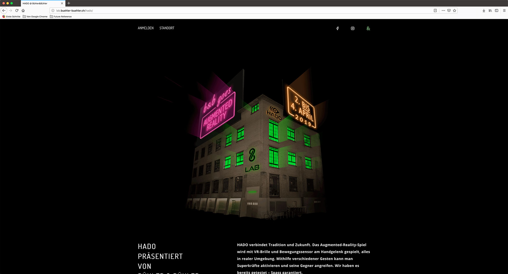
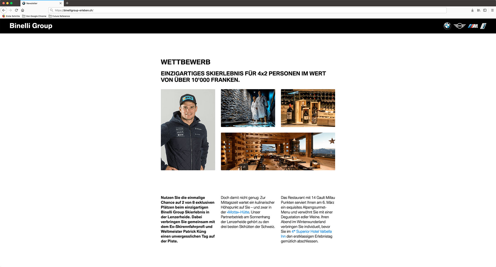

Benjamin Bar-Gera
Web Developer and Outdoor Enthusiast
My name's Beni and I'm 25 years old. After graduating with a degree in International Relations, I worked as a ski instructor, rafting guide, and hiking guide in Switzerland and Canada.
While working outside, I taught myself how to program. In January 2019, I’ve started an internship as a web developer at a media agency in Zurich. I am currently working there and learning a lot.
What I've made

HADO Event Page
This Portfolio
Advance
